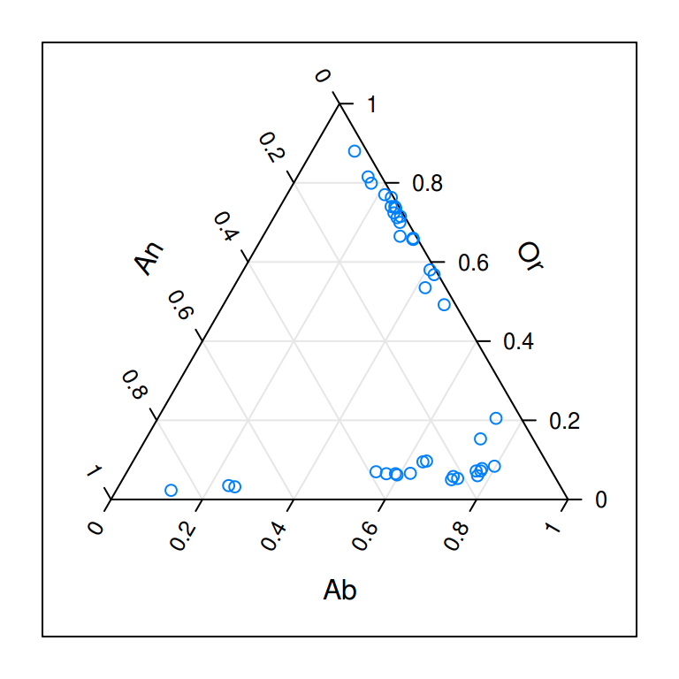
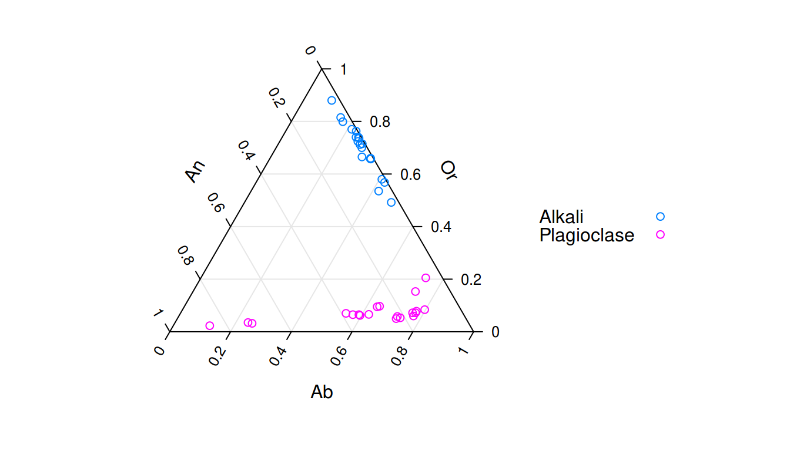
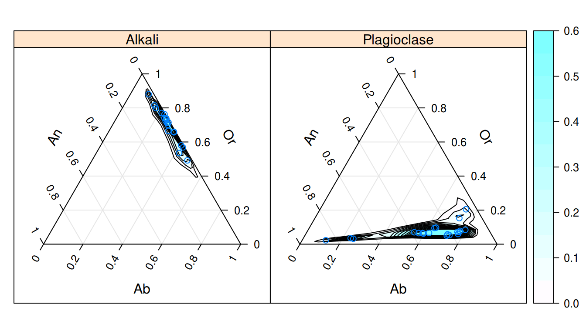
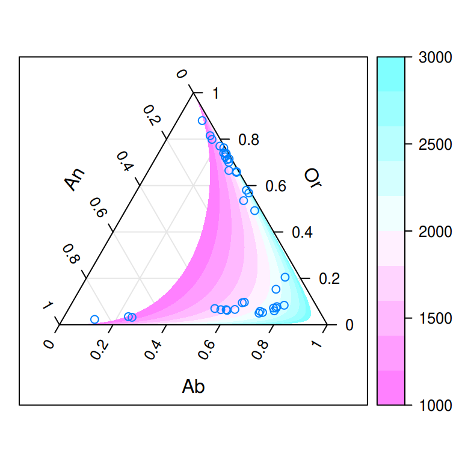
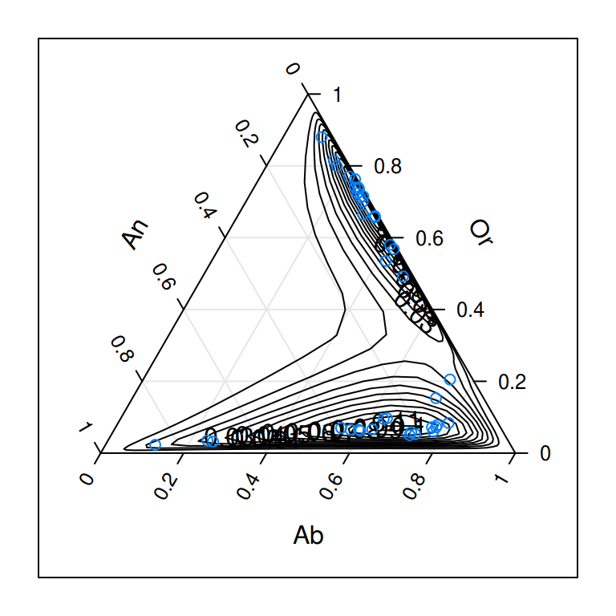
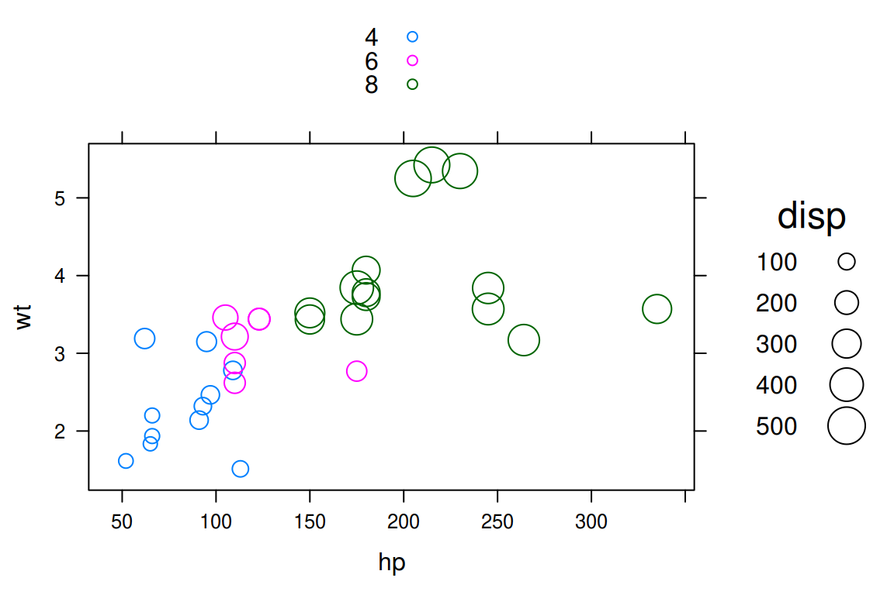
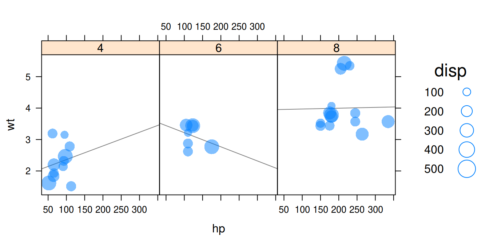

vignettes/new-high-level-functions.Rmd
new-high-level-functions.Rmdtactile introduces a few new high-level functions to the latticeverse. This vignette will be updated as new functions are added.
ternaryplot(): Ternary plotsTernary plots display proportions of three variables on a two-dimensional grid are popular in compositional analysis. tactile can be used to generate ternary plots with ternaryplot() which takes formula, matrix, or data.frame objects an input. The formula method – the focus of this vignette – used the form top ~ left * right in terms of the dimensions of the ternary diagram.
To showcase the use of ternaryplot() we’ll use data from an article by Grove and Jenkins that has been imported into tactile and made available simply by calling feldspar. We begin with the simplest form of a ternary plot.

All of the bells and whistles of lattice graphics are available in tactile too, and we may benefit here by, for instance, grouping variables by the coexisting feldspar facor Feldspar. Here, we also remove the useless box around the plot.
ternaryplot(Or ~ An * Ab, groups = Feldspar, data = feldspar,
auto.key = list(space = "right"),
par.settings = list(axis.line = list(col = "transparent")))
Another feature to visualize the compositions, which would make more sense with a larger dataset, is to add two-dimensional density estimates. We do this by setting the density argument to TRUE. Instead of superposing the two types of composite feldspars, we now condition instead.

These density estimations are produced by first applying a isometric log transformation and then computing density estimates with MASS::kde2d() before returning the coordinates to the ternary coordinate space.
One more feature that is available is to model a response on our compositional data. We (obviously) need a separate outcome variable for this and will here use the temperature of the reaction from the feldspar experiments, offering examples of a version with region fills and one with contours.
ternaryplot(Or ~ An * Ab, response = Pressure, data = feldspar,
contour = FALSE)
ternaryplot(Or ~ An * Ab, response = Pressure, data = feldspar, region = FALSE)
bubbleplot(): BubbleplotsBubble plots are simple scatter plots that have been extended to a third dimensions by mapping a third variable to the size (area) of the plot symbols, which theoretically could be anything but usually is points. Bubble plots were made famous by the late Hans Rosling.
Bubble plots in tactile are available with bubbleplot() and take a formula of the type bubblesize ~ x * y as its first argument. We illustrate with with the mtcars data set from R that sports the features of 32 cars from the 1974 Motor Trend US magazine. We start by mapping the displacement to the bubble size against horsepower (hp) and weight (wt).

More elaborate designs can be fashioned if we were to combine the plot with some of the specialized panel functions from lattice. Here, we also change to a filled circle design with semitransparent bubbles.
bubbleplot(disp ~ hp * wt | factor(cyl), data = mtcars, auto.key = TRUE,
pch = 16, alpha = 0.5, layout = c(3, 1),
panel = function(x, y, z, ...) {
panel.lmline(x, y, ...)
panel.bubbleplot(x, y, z, ...)
})